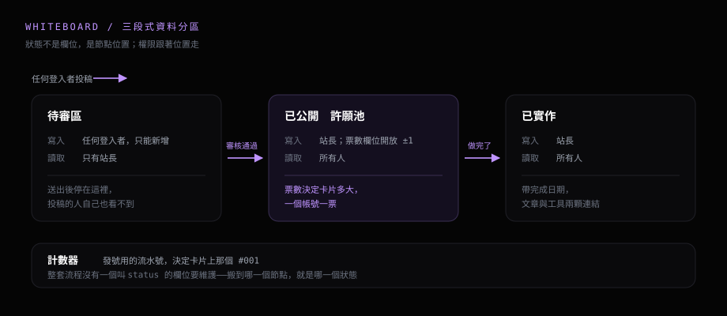

這個站上有一面許願板。任何人都能貼一個想法上去。其他人按愛心，票數高的排前面。這篇寫它怎麼來的。
寫程式是我的興趣。興趣只有自己在用，有點可惜。我想讓它對別人也有一點用處。另外我想要一個溝通的管道。來看這個站的人，應該有地方能跟我說「這個我想看」。
Whiteboard 就是為了這兩件事做的。2026-05-09 晚上我先搭好空殼。只有版面沒有功能。隔天一整天把核心補完。
# 一開始想做成什麼樣子
我要的是一面公開的牆。登入的人可以貼想法，其他人按愛心。我做完的往下沉成紀錄。三個狀態，一條單向的路。
開放投稿就要處理灌水。驗證碼、速率限制、關鍵字過濾，這些各自能擋掉一部分。維護成本也跟著增加。這個站的流量用不到那一整套。
所以我把規則縮成一句：任何人都能送，公開與否由我決定。

# 架構：三個節點就是三個狀態
資料放在 Firebase Realtime Database。它由 Google 代管，瀏覽器可以直接讀寫。權限寫在它自己的一份檔案裡，叫 Security Rules。逐個節點宣告誰能讀、誰能寫。
這個站沒有後端。整套權限就靠這份檔案撐著。
第一版我把資料全部放在同一棵樹底下，想用一個欄位把待審的內容遮起來。這條路走不通。讀取權限會往下傳，父節點一開放，底下全部跟著開放。
改成三個獨立節點之後問題就沒了。審核這個動作，實際上就是把資料從一個節點搬到下一個。

這樣切完，整套流程沒有一個叫 status 的欄位要維護。待審區的讀取權限只認我一個人。送出去的東西在通過之前誰都看不到，投稿的人自己也一樣。
# 工具本身怎麼設計
右下角固定一顆按鈕，點開填一行標題，說明選填。兩個欄位都有字數上限。前端檢查一次，資料庫規則再檢查一次。前者擋手滑，後者擋繞過畫面直接打 API 的人。
愛心是一個帳號一票，再按一次收回。做法是兩個欄位配一條規則。一個存總票數，規則只准一次加一或減一。另一個按人分格，規則只准本人寫自己那一格。
按下去的當下畫面先變。寫入失敗再把數字跟圖示退回去。
許願池的版面是 bento，卡片大小由票數決定。每跨過一個門檻就跳一級寬度，最低的一級佔四分之一排，最高票那張吃掉大半排，還會多佔一列高度。整面牆會隨著大家按愛心慢慢變形，我這邊不用維護排序。
最後是一個只有我看得到的審核頁，四個動作：看待審清單、通過、駁回、畢業。投稿者的信箱一路從待審帶到已實作，要回信找得到人。
# 中間卡住的地方
登入壞掉，修了兩次
第一版用 Firebase 內建的彈窗登入。本機開 Live Server 一切正常。推上 GitHub Pages 之後彈窗關不掉，畫面只丟一句「The requested action is invalid」。沒有堆疊也沒有錯誤碼。
問題出在 COOP 這個標頭。它會切斷網頁跟它開出來的視窗之間的引用關係，避免兩邊互相操控。GitHub Pages 預設就送這個標頭。
引用斷掉之後，彈窗登入完成，結果傳不回母頁面，自己也關不掉。
那天我先改成 redirect 擋一下。頁面整個跳走再跳回來，能動，但體驗很差。
真正的解法三週後才換上。用 Google Identity Services 在頁面內拿到憑證，再在同一頁換成資料庫認得的身分。全程不開新視窗。
這條坑本機測不出來。線上跟本機送的標頭不一樣，等於兩個執行環境。
兩條資料庫連線撞在一起
首頁的愛心按鈕早就開了一條 Firebase 連線。許願板的程式再開一次會撞名，因為預設連線同一個站只能有一個。
解法是初始化的時候多帶一個名字。它就變成一條獨立的具名連線。同一份設定，兩個實例互不干擾。
# 做完了，也還在用
05-09 空殼、05-10 收工，核心是一天做完的。後來補了英文版，六月把登入換成現在這套。
它到現在還掛在站上。我自己也還在用它記待辦，想到要加什麼就加。
第一次做這種對外開放投稿的東西，一定有沒想周全的地方。有建議直接在許願板貼一則最快，我看得到。想丟意見或看程式碼，站的原始碼全部公開在 GitHub，開 issue 或給一顆 star 我都收得到。
# 參考連結
- • Whiteboard — 直接打開，丟一個想法進來
- • Meet — 同一套設定上的第二個工具
- • Google Identity Services — 官方文件
- • Cross-Origin-Opener-Policy — MDN
# 技術棧
- 前端：原生 JavaScript ＋ Tailwind，單一檔案，無框架無打包工具
- 部署：GitHub Pages
- 資料庫與權限：Firebase Realtime Database ＋ Security Rules，站長身分靠比對一組固定帳號來判斷
- 登入：Google Identity Services，頁內登入不開彈窗
- 即時更新：監聽已公開與已實作兩個節點，資料一變畫面就跟著重畫
- 票數：transaction 加減，另一個欄位按人分格記錄投過的人
- 共用：跟 Meet 共用同一個 Firebase 專案與同一份權限檔，兩個工具各佔一個頂層節點